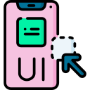

UI and UX
Aren't they the same?
UI and UX are two different design elements but they do need each other to compliment both experience and design. For example you may have a banking app on your phone that looks great and really good navigation. However if the application loads slowly or you are needing to click numerous times to make what could have been an easy transfer, then you most likely would not want to use the app. That is User interface and User experience.
UI design
User Interface design is usually the designing of a user interface of a website or application. It leans more towards the visual design layout and interactive elements. Its functional and easy to use. Responsive interfaces with a positive interaction between user and product.
Interface design are more visual, first sight viewers that decide what colours match, safe fonts to use and plans visual aesthetics. Experts in mock ups, graphics and layouts.
A selection of elements used to bring a visually appealing and easy to navigate product.
UX design
User Experience is based on the user experience that also includes the interface, userability and satisfaction. Understanding the needs and preferences of the user. Providing a product that reflects these requirements giving an overall positive experience.
Making a goal where the product is functional and enjoyable to use. UX often applies to digital products or non digital products such as transportation systems etc. What a UX designer would do is some research first.
Research would be:
- Identify any goals, needs, behaviours with a product interaction
- Develop personas based on target customers
- Journey Maps to analyze how customer interacts with product
- Build wireframes and prototypes to hone in on what the final product looks like
- Performing user testing
- Collaborating with stakeholders, UI designers, and developers